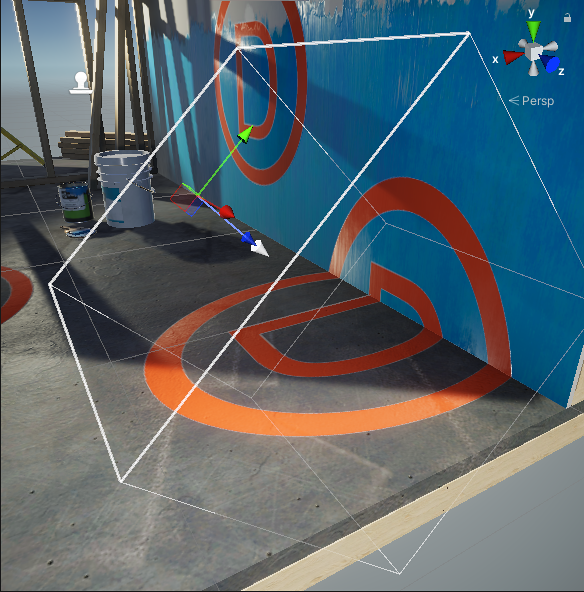
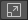
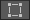
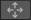

The Decal Projector component contains the SceneA Scene contains the environments and menus of your game. Think of each unique Scene file as a unique level. In each Scene, you place your environments, obstacles, and decorations, essentially designing and building your game in pieces. More info
See in Glossary view editing tools and the Decal Projector properties.
Note: If you assign a Decal Material to a GameObject directly (not via a Decal Projector component), then Decal Projectors do not project decals on such GameObject.
When you select a Decal Projector, Unity shows its bounds and the projection direction.
The Decal Projector draws the decal Material on every MeshThe main graphics primitive of Unity. Meshes make up a large part of your 3D worlds. Unity supports triangulated or Quadrangulated polygon meshes. Nurbs, Nurms, Subdiv surfaces must be converted to polygons. More info
See in Glossary inside the bounding box.
The white arrow shows the projection direction. The base of the arrow is the pivot point.

The Decal Projector component provides the following Scene viewAn interactive view into the world you are creating. You use the Scene View to select and position scenery, characters, cameras, lights, and all other types of Game Object. More info
See in Glossary editing tools.
| Icon | Action | Description |
|---|---|---|
 |
Scale | Select to scale the projector box and the decal. This tool changes the UVs of the Material to match the size of the projector box. The tool does not affect the pivot point. |
 |
Crop | Select to crop or tile the decal with the projector box. This tool changes the size of the projector box but not the UVs of the Material. The tool does not affect the pivot point. |
 |
Pivot / UV | Select to move the pivot point of the decal without moving the projection box. This tool changes the transform position. This tool also affects the UV coordinates of the projected texture. |
This section describes the Decal Projector component properties.
| Property | Description |
|---|---|
| Scale Mode | Select whether this Decal Projector inherits the Scale values from the Transform component of the root GameObject. For more information, refer to Scale Mode property. Note: since the Decal Projector uses the orthogonal projection, if the root GameObject is skewed, the decal does not scale correctly. |
| Width | The width of the projector bounding box. The projector scales the decal to match this value along the local X axis. |
| Height | The height of the projector bounding box. The projector scales the decal to match this value along the local Y axis. |
| Projection Depth | The depth of the projector bounding box. The projector projects decals along the local Z axis. |
| Pivot | The offset position of the center of the projector bounding box relative to the origin of the root GameObjectThe fundamental object in Unity scenes, which can represent characters, props, scenery, cameras, waypoints, and more. A GameObject’s functionality is defined by the Components attached to it. More info See in Glossary. |
| Material | The Material to project. The Material must use a Shader Graph that has the Decal Material type. Use the New dropdown to create a new decal material and its associated shader from a template. The options are the following:
|
| Tiling | The tiling values for the decal Material along its UV axes. |
| Offset | The offset values for the decal Material along its UV axes. |
| Opacity | This property lets you specify the opacity value. A value of 0 makes the decal fully transparent, a value of 1 makes the decal as opaque as defined by the Material. |
| Draw Distance | The distance from the CameraA component which creates an image of a particular viewpoint in your scene. The output is either drawn to the screen or captured as a texture. More info See in Glossary to the Decal at which this projector stops projecting the decal and URP no longer renders the decal. |
| Start Fade | Use the slider to set the distance from the Camera at which the projector begins to fade out the decal. Values from 0 to 1 represent a fraction of the Draw Distance. With a value of 0.9, Unity starts fading the decal out at 90% of the Draw Distance and finishes fading it out at the Draw Distance. |
| Angle Fade | Use the slider to set the fade out range of the decal based on the angle between the decal’s backward direction and the vertex normal of the receiving surface. |
| Option | Description |
|---|---|
| Scale Invariant | Unity uses the scaling values (Width, Height, etc.) only in this component, and ignores the values in the root GameObject. |
| Inherit from Hierarchy | Unity evaluates the scaling values for the decal by multiplying the lossy Scale values of the Transform of the root GameObject by the Decal Projector’s scale values. |